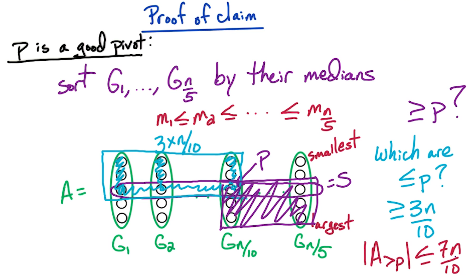

Week 3 — Linear-Time Median (D&C)
2026-06-01 → 06-07 · Module DC2 (Sorting, Linear-Time Median / Selection)
Due this week
| Item | Type | Note |
|---|---|---|
| HW3 | coding | |
| HW4 | coding | |
| Quiz 3 | content | DP + D&C |
| Mock Exam | practice | no due date — exam-format rehearsal |
Watch the lecture (Linear-Time Median)
Learning objectives
- State the selection problem and solve it in worst-case O(n).
- Explain the median-of-medians pivot and prove the linear bound from its recurrence.
- Relate QuickSelect, pivot quality, and the role of the "good pivot" guarantee.
Core concepts
The selection problem
Definition. select(A, k) returns the
k-th smallest element of an
unsorted array (median is k = ⌈n/2⌉).
Intuition: you want order statistics without paying
O(nlog n)
to sort everything.
QuickSelect (and why pivots matter)
QuickSelect. Partition A around a pivot p; the pivot lands in its sorted position r. If r = k done; else recurse into the side containing the k-th element — one side only.
- A good pivot (near median) gives T(n) = T(n/2) + O(n) = O(n).
- A bad pivot (min/max each time) gives T(n) = T(n − 1) + O(n) = O(n2) worst case.
- Random pivot is O(n) expected, but the course wants a worst-case guarantee.
Median of medians — the deterministic good pivot
Idea. Manufacture a provably-decent pivot:
- Split the n elements into ⌈n/5⌉ groups of 5.
- Find each group's median (constant work per group → O(n) total).
- Recursively select the median of those n/5 medians; use it as the pivot.
Why the pivot is good. That pivot is ≥ at least 3 elements in half the groups, so it is greater than $\ge \tfrac{3}{10}n$ and less than $\ge \tfrac{3}{10}n$ elements. Hence each recursive call discards $\ge \tfrac{3}{10}n$, leaving $\le \tfrac{7}{10}n$.
Algorithms
Linear-time selection (median of medians) — O(n)
- Group into fives, find group medians — O(n).
- Pivot = select the median of the medians recursively on n/5 items.
- Partition around the pivot — O(n).
- Recurse into the one side that holds the k-th element (size ≤ 7n/10).
Recurrence and solution: $$ T(n)\ \le\ T\!\left(\tfrac{n}{5}\right) + T\!\left(\tfrac{7n}{10}\right) + O(n)\ \Rightarrow\ T(n)=O(n). $$
| Algorithm | Pivot | Worst case |
|---|---|---|
| Mergesort (full sort) | — | O(nlog n) |
| QuickSelect | random / first | O(n2) (expected O(n)) |
| Median-of-medians select | median of group-of-5 medians | O(n) |
Key theorems & results
Linear-selection theorem. The recurrence T(n) ≤ T(n/5) + T(7n/10) + O(n) solves to T(n) = O(n). Proof sketch (substitution). Guess T(n) ≤ cn. Then $$ T(n)\le \tfrac{cn}{5} + \tfrac{7cn}{10} + an = cn\!\left(\tfrac{1}{5}+\tfrac{7}{10}\right) + an = \tfrac{9}{10}cn + an. $$ This is ≤ cn whenever $\tfrac{1}{10}cn \ge an$, i.e. c ≥ 10a. So T(n) = O(n). ∎
The crux is $\tfrac{1}{5}+\tfrac{7}{10}=\tfrac{9}{10}<1$: the two recursive pieces are strictly smaller than n, so the linear combine cost doesn't accumulate. Groups of 3 give $\tfrac{2}{3}+\tfrac{1}{3}=1$ and fail; groups of 5 are the smallest odd size that works.
Worked example — unrolling the recurrence
Total work $\le an\left(1 + \tfrac{9}{10} + \left(\tfrac{9}{10}\right)^2 + \cdots\right) = an\cdot\dfrac{1}{1-\tfrac{9}{10}} = 10\,an = O(n)$. The geometric series in ratio $\tfrac{9}{10}$ is what bounds it.
Common pitfalls / exam traps
- Claiming QuickSelect is worst-case O(n) — it is only expected O(n); median-of-medians is the worst-case version.
- Forgetting the pivot itself is found by a recursive select on n/5 — both recursive terms must appear.
- Using groups of 3 (the fractions sum to 1, breaking linearity).
- Re-deriving the $\tfrac{3}{10}$ constants on an exam — usually cite the recurrence and the O(n) result.
How to answer (HW / exam)
Treat linear-time selection as a black box — cite the recurrence and the O(n) result; don't re-derive the constant fractions unless asked. See D&C guidance.
Go deeper — readings · guidance · notes
Comprehensive Notes
Full lecture notes for this week's module. The summary above is the quick-reference; this is the deep read.
DC2 — Linear-Time Median (Selection)
Problem. Given an unsorted list A = [a1, …, an], find the median, defined as the ⌈n/2⌉-th smallest element. We solve the more general selection problem: find the k-th smallest element (1 ≤ k ≤ n); median is k = n/2.
Trivial bounds. If A is sorted, output A[k]. Otherwise sort (mergesort, O(nlog n)) then index — O(nlog n). Can we beat sorting? Yes — O(n).
QuickSelect — recurse on one side only. Like QuickSort but we only recurse into the one partition that must contain the k-th element:
Select(A, k):
choose a pivot p
partition A into A<p, A=p, A>p
if k <= |A<p|: return Select(A<p, k)
if |A<p| < k <= |A<p| + |A=p|: return p
if k > |A<p| + |A=p|: return Select(A>p, k - |A<p| - |A=p|)Example: A = [5, 2, 20, 17, 11, 13, 8, 9, 11], p = 11 → A < p = [5, 2, 8, 9], A = p = [11, 11], A > p = [20, 17, 13]. k is a position, not a value: if k < 4 recurse left; if 4 < k ≤ 6 return 11; if k > 6 recurse right on the (k − 6)-th.
Key idea — pivot quality is everything. A worst pivot (min/max) shrinks the problem by one element → O(n2); the true median gives T(n) = T(n/2) + O(n) = O(n) — but that median is the very thing we're computing.
An approximate median suffices: any pivot that discards a constant fraction keeps it linear (e.g. T(3n/4) + O(n) = O(n), even T(0.99n) + O(n) = O(n)).
Good pivot, defined. p is good if |A < p| ≤ 3n/4 and |A > p| ≤ 3n/4 (both sides at most 3n/4). We must find one in O(n).
- Random pivot? Half the elements are good, so Pr (good) = 1/2 — O(n) expected time. But expected ≠ guaranteed, and we want a worst-case guarantee.
- Median of medians. We have budget for T(3n/4) + T(n/5) + O(n)
(since $\tfrac34 + \tfrac15 < 1$).
Pick p as the median of a
representative subset S of
size n/5:
- Break A into n/5 groups of 5.
- Sort each group — O(1) each (size is the constant 5), O(n) total.
- Take each group's median; collect them into S.
- $p = $ median of S (a
recursive
FastSelecton S).
FastSelect(A, k):
break A into ceil(n/5) groups G_1..G_{n/5}
for each G_i: sort(G_i); m_i = median(G_i)
S = {m_1, ..., m_{n/5}}
p = FastSelect(S, n/10) # median of medians
partition A into A<p, A=p, A>p
if k <= |A<p|: return FastSelect(A<p, k)
if k > |A>p| + |A=p|: return FastSelect(A>p, k - |A<p| - |A=p|)
else return pRuntime. Grouping O(n) + sorting groups O(n) + median-of-medians T(n/5) + recurse on one side T(3n/4):
T(n) = T(3n/4) + T(n/5) + O(n) = O(n).
The two recursive sizes sum to $\tfrac34 + \tfrac15 = \tfrac{19}{20} < 1$, which is exactly why it collapses to linear.

Exercise (worth pondering for the exam): why groups of 5 — why not 3 or 7?
DPV chapter exercises
DPV chapter exercises (exact, from the textbook)
Exact end-of-chapter exercises, parsed from the DPV chapter PDFs.
DPV Ch 2 — Divide And Conquer — open exercises · chapter PDF
Agent hint
Selection question → use median-of-medians as a black box, cite T(n) ≤ T(n/5) + T(7n/10) + O(n) = O(n), and note the $\tfrac{9}{10}<1$ collapse. This is the last unit before Exam 1 (covers W1–3).